Breakthroughs in Optimization#
“Nothing at all takes place in the universe in which some rule of maximum or minimum does not appear.” – Leonhard Euler, Methodus Inveniendi Lineas Curvas, 1744
Finding the best of something – the shortest path, the cheapest plan,
the lowest-energy configuration – is one of the oldest applied problems
in mathematics. A systematic theory of optimization, with convergence
guarantees and complexity bounds instead of case-by-case cleverness, is
a product of the 20th century. This chronology traces the descent
methods, constrained and combinatorial optimization, and stochastic
methods behind mathematicskit.optimization.
1788-1951 – Lagrange Multipliers and the KKT Conditions#
Joseph-Louis Lagrange’s 1788 Mécanique analytique set out a technique he had first used in his calculus-of-variations work of the 1760s. To minimize \(f(x)\) subject to a constraint \(g(x)=0\), introduce an auxiliary variable (the multiplier \(\lambda\)) and look for a stationary point of \(f(x) + \lambda g(x)\), treated as unconstrained in \(x\) and \(\lambda\) together. A constrained problem becomes an ordinary one, at the cost of extra variables. William Karush’s 1939 master’s thesis extended the idea to inequality constraints, and Harold Kuhn and Albert Tucker rediscovered the result independently in 1951. The resulting first-order KKT conditions are still used to certify a constrained optimum today.
Implementation: mathematicskit.optimization.systems.constrained.lagrange_stationary_point()
solves the equality-constrained Lagrange system directly.
verify_kkt()
checks the full Karush-Kuhn-Tucker conditions (stationarity, primal and
dual feasibility, complementary slackness) numerically at a candidate
point.
References: J.-L. Lagrange, Mécanique analytique (Paris: Veuve Desaint, 1788); W. Karush, “Minima of Functions of Several Variables with Inequalities as Side Conditions” (Master’s thesis, University of Chicago, 1939); H. W. Kuhn and A. W. Tucker, “Nonlinear Programming,” Proceedings of the Second Berkeley Symposium on Mathematical Statistics and Probability (1951), 481-492.
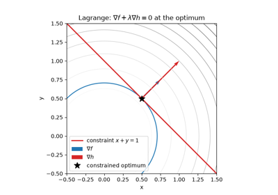
Lagrange multipliers and the KKT conditions
1847 – Cauchy and Gradient Descent#
Augustin-Louis Cauchy’s 1847 note to the French Academy proposed the simplest strategy for minimizing a function of several variables: repeatedly step in the direction of steepest local descent, the negative gradient. With a suitably small step it steadily decreases a smooth function, but it notoriously zig-zags across narrow, elongated (ill-conditioned) valleys. The weakness is easy to see by comparing its convergence with a method that adapts its step size, or with the conjugate-direction methods developed more than a century later.
Implementation: mathematicskit.optimization.systems.gradient_descent.GradientDescent
implements this fixed-step rule.
GradientDescentLineSearch
adds a backtracking line search, as presented in Jorge Nocedal and
Stephen Wright’s textbook, to choose the step size at each iterate.
References: A.-L. Cauchy, “Méthode générale pour la résolution des systèmes d’équations simultanées,” Comptes Rendus de l’Académie des Sciences 25 (1847), 536-538.

Fixed step vs. backtracking line search on an ill-conditioned bowl
1928 – Von Neumann’s Minimax Theorem#
In a two-player zero-sum game, one player’s gain is exactly the other’s loss. John von Neumann proved in 1928 that if players may randomize over their moves (use mixed strategies), every finite game of this kind has a well-defined value \(v\). The row player has a strategy guaranteeing an expected payoff of at least \(v\), and the column player has one conceding no more than \(v\):
The theorem founded game theory, which von Neumann and Oskar Morgenstern developed in their 1944 book. When linear programming arrived two decades later, Dantzig and von Neumann saw that the minimax theorem is a form of LP duality: each player’s problem is a linear program, and the two programs are duals of each other.
Implementation: mathematicskit.optimization.systems.game_theory.solve_zero_sum_game()
solves both players’ linear programs with
linear_program()
and returns both optimal mixed strategies and the value in a
GameResult.
References: J. von Neumann, “Zur Theorie der Gesellschaftsspiele,” Mathematische Annalen 100 (1928), 295-320; J. von Neumann and O. Morgenstern, Theory of Games and Economic Behavior (Princeton: Princeton University Press, 1944).
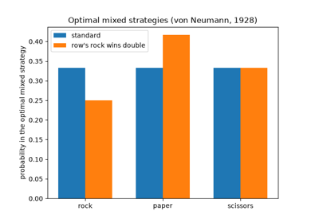
Von Neumann’s minimax theorem: optimal mixed strategies
1944-1963 – Levenberg, Marquardt, and Nonlinear Least Squares#
Fitting a model to data by least squares means minimizing \(\tfrac12 \sum_i r_i(x)^2\), where each residual \(r_i\) is the gap between a data point and the model’s prediction. When the model is nonlinear in its parameters, the Gauss-Newton method linearizes the residuals and solves a linear least-squares problem at each step. It converges fast near the solution but can diverge from a poor starting guess. Kenneth Levenberg (1944) and Donald Marquardt (1963) added a damping term:
Here \(J\) is the Jacobian of the residuals and \(D\) is the identity (Levenberg) or the diagonal of \(J^T J\) (Marquardt). A large \(\lambda\) gives a short, safe step along the negative gradient; a small \(\lambda\) recovers Gauss-Newton. Adjusting \(\lambda\) from step to step gives a method that is both robust and fast. It remains the standard algorithm for nonlinear curve fitting, and was one of the first trust-region methods.
Implementation: mathematicskit.optimization.systems.least_squares.levenberg_marquardt()
wraps scipy.optimize.least_squares(method="lm") (MINPACK’s
implementation) and returns a
LeastSquaresResult.
References: K. Levenberg, “A Method for the Solution of Certain Non-Linear Problems in Least Squares,” Quarterly of Applied Mathematics 2(2) (1944), 164-168; D. W. Marquardt, “An Algorithm for Least-Squares Estimation of Nonlinear Parameters,” Journal of the Society for Industrial and Applied Mathematics 11(2) (1963), 431-441.
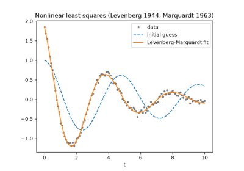
Levenberg-Marquardt: fitting a damped oscillation
1947 – Dantzig’s Simplex Method#
George Dantzig, working on logistics planning for the US Air Force, formulated the general linear program: minimize a linear objective subject to linear inequality constraints. In 1947 he devised the simplex method, which walks from vertex to adjacent vertex of the constraint polytope, always improving the objective, until no adjacent vertex does better. Victor Klee and George Minty showed in 1972 that its worst case is exponential, yet the method is famously efficient in practice. Together with interior-point methods, it remains one of the two workhorses of large-scale linear programming.
Implementation: mathematicskit.optimization.systems.linear_programming.linear_program()
wraps scipy.optimize.linprog(), which chooses between a dual
simplex method and an interior-point method depending on the problem’s
structure.
References: G. B. Dantzig, “Maximization of a Linear Function of Variables Subject to Linear Inequalities,” in Activity Analysis of Production and Allocation, ed. T. C. Koopmans (New York: Wiley, 1951), 339-347 (describing the method Dantzig developed in 1947).
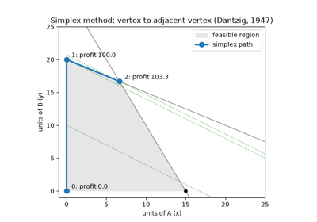
Dantzig’s simplex method: walking the vertices of a production LP
1951 – Robbins, Monro, and Stochastic Approximation#
Herbert Robbins and Sutton Monro asked how to find a root of a function \(M(x)\) that can only be measured with random error, as in a dose level that produces a target response in an experiment. Their answer was to step against each noisy measurement with a shrinking step size:
The first condition lets the iterates travel any distance; the second makes the noise average out. They proved convergence in mean square for steps such as \(a_k = a/k\). Applied to noisy gradients, the iteration is stochastic gradient descent. Computing the gradient on a random mini-batch of data instead of the full data set is exactly such a noisy measurement, which is why the Robbins-Monro framework underlies the training of essentially every modern machine-learning model.
Implementation: mathematicskit.optimization.systems.stochastic.robbins_monro()
runs the iteration with steps \(a_0/(k+1)\) on a user-supplied
noisy gradient, recording the iterate path.
References: H. Robbins and S. Monro, “A Stochastic Approximation Method,” The Annals of Mathematical Statistics 22(3) (1951), 400-407.
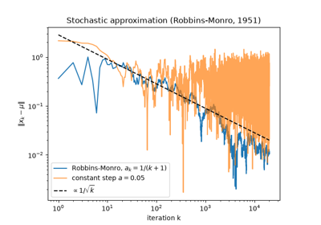
Robbins-Monro: stochastic gradient descent with decaying steps
1952-1957 – Bellman and Dynamic Programming#
Richard Bellman, working at the RAND Corporation, studied multistage decision processes: sequences of choices in which each decision changes the situation facing the next. His principle of optimality says that whatever the first decision, the remaining decisions of an optimal policy must themselves be optimal for the state that results. A problem can therefore be solved by building a table of optimal values for successively larger subproblems. For the 0/1 knapsack problem (choose items of weights \(w_i\) and values \(v_i\) of greatest total value within capacity \(W\)), the Bellman recursion is
which solves in \(O(nW)\) time a problem with \(2^n\) candidate selections. The same idea underlies shortest-path algorithms, sequence alignment, optimal control, and reinforcement learning.
Implementation: mathematicskit.optimization.systems.dynamic_programming.knapsack()
fills Bellman’s value table for the 0/1 knapsack problem and traces back
the chosen items, returning a
KnapsackResult that
includes the table itself.
References: R. Bellman, “On the Theory of Dynamic Programming,” Proceedings of the National Academy of Sciences 38(8) (1952), 716-719; R. Bellman, Dynamic Programming (Princeton: Princeton University Press, 1957).
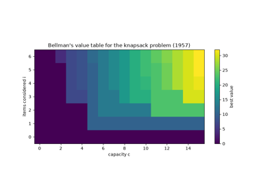
Bellman’s principle of optimality: the 0/1 knapsack
1953 – Kiefer’s Fibonacci and Golden-Section Search#
How few function evaluations suffice to locate the minimum of a unimodal function of one variable on an interval? Jack Kiefer proved in 1953 that, for a fixed budget of evaluations, the optimal sequential strategy places them at ratios of consecutive Fibonacci numbers. As the budget grows, those ratios tend to \(1/\varphi\), where \(\varphi = (1+\sqrt5)/2\) is the golden ratio, which gives golden-section search. Two interior points divide the bracket in the golden ratio, and comparing the function values there discards one end. The surviving interior point is exactly where the next bracket needs one of its own, so each step costs a single new evaluation and shrinks the bracket by the factor \(1/\varphi \approx 0.618\). Guaranteed linear convergence without derivatives made it the standard safeguard inside one-dimensional line searches, notably Brent’s method.
Implementation: mathematicskit.optimization.systems.scalar_search.golden_section_search()
implements the method and records every bracket in a
ScalarSearchResult.
References: J. Kiefer, “Sequential Minimax Search for a Maximum,” Proceedings of the American Mathematical Society 4(3) (1953), 502-506.
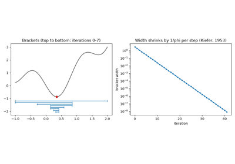
Golden-section search: shrinking the bracket
1956 – The Frank-Wolfe Method#
Marguerite Frank and Philip Wolfe, both at Princeton, proposed an algorithm for minimizing a convex quadratic function over a polytope that never needs to project back onto the feasible set. At each iterate it minimizes the linearization of the objective over the polytope. That subproblem is a linear program, solved at a vertex \(s_k\), and the method then moves part of the way toward that vertex:
The quantity \(\nabla f(x_k)^T(x_k - s_k)\) bounds the error \(f(x_k) - f^*\) from above, so the method certifies its own accuracy, and the error decays as \(O(1/k)\). Largely set aside for decades, the method (also called conditional gradient) returned to prominence in machine learning, where its iterates are sparse combinations of few vertices and a linear subproblem is often much cheaper than a projection.
Implementation: mathematicskit.optimization.systems.frank_wolfe.frank_wolfe()
solves each linear subproblem with
linear_program()
and records the Frank-Wolfe gap at every iteration.
References: M. Frank and P. Wolfe, “An Algorithm for Quadratic Programming,” Naval Research Logistics Quarterly 3(1-2) (1956), 95-110; M. Jaggi, “Revisiting Frank-Wolfe: Projection-Free Sparse Convex Optimization,” Proceedings of the 30th International Conference on Machine Learning, PMLR 28(1) (2013), 427-435.
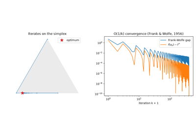
Frank-Wolfe: optimization over the probability simplex
1960 – Rosenbrock’s Banana Function#
Howard Rosenbrock’s 1960 paper introduced a deliberately awkward test function: a narrow, curved, parabolic valley. It stress-tests optimization algorithms against the kind of ill-conditioning that gradient-descent-style methods handle badly. Finding the valley floor is easy, but following it to the true minimum is painfully slow without curvature information. More than sixty years later it remains the standard benchmark for comparing the convergence of optimization methods.
Implementation: mathematicskit.optimization.utils.test_functions.rosenbrock(),
with its gradient and Hessian, is this function. It serves throughout
this domain’s tests and examples as the shared benchmark for comparing
gradient descent, conjugate gradient, Newton’s method, and BFGS.
References: H. H. Rosenbrock, “An Automatic Method for Finding the Greatest or Least Value of a Function,” The Computer Journal 3(3) (1960), 175-184.
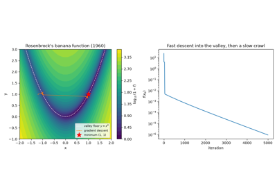
Rosenbrock’s banana function: a narrow curved valley
1960 – Land, Doig, and Branch-and-Bound#
Many planning problems need whole-number answers: a factory cannot open half a plant. Rounding the solution of the linear-programming relaxation (the same problem with the integrality requirement dropped) can give an infeasible or far-from-optimal answer. Ailsa Land and Alison Doig, at the London School of Economics, proposed a systematic search in 1960. Solve the relaxation; if a variable \(x_j = t\) is fractional, branch into two subproblems with \(x_j \leq \lfloor t \rfloor\) and \(x_j \geq \lceil t \rceil\). Any subproblem whose relaxation cannot beat the best integer solution found so far is discarded (bounded). Combined with Ralph Gomory’s cutting planes (1958), branch-and-bound is the basis of every modern mixed-integer programming solver.
Implementation: mathematicskit.optimization.systems.linear_programming.integer_linear_program()
wraps scipy.optimize.milp(), whose HiGHS solver uses
branch-and-cut, the modern descendant of Land and Doig’s method.
References: A. H. Land and A. G. Doig, “An Automatic Method of Solving Discrete Programming Problems,” Econometrica 28(3) (1960), 497-520; R. E. Gomory, “Outline of an Algorithm for Integer Solutions to Linear Programs,” Bulletin of the American Mathematical Society 64(5) (1958), 275-278.
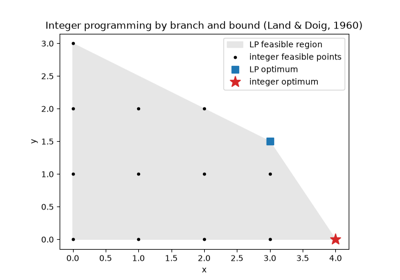
Branch and bound: integer versus relaxed optimum
1964-1969 – Conjugate Gradients as Nonlinear Optimization#
Magnus Hestenes and Eduard Stiefel’s conjugate gradient method for linear systems (see the linear-algebra chronology) has a direct nonlinear descendant. Roger Fletcher and Colin Reeves’s 1964 generalization replaces the linear residual with the gradient of a general nonlinear objective. Each new search direction reuses the previous one, weighted by a scalar \(\beta_k\), which avoids the zig-zagging of steepest descent without any second-derivative information. Elijah Polak and Gerard Ribière’s 1969 choice of \(\beta_k\), with a standard non-negativity safeguard, tends to recover faster after an inaccurate line search in practice.
Implementation: mathematicskit.optimization.systems.conjugate_gradient.NonlinearConjugateGradient
implements both the Fletcher-Reeves and Polak-Ribière variants.
References: R. Fletcher and C. M. Reeves, “Function Minimization by Conjugate Gradients,” The Computer Journal 7(2) (1964), 149-154; E. Polak and G. Ribière, “Note sur la convergence de méthodes de directions conjuguées,” Revue Française d’Informatique et de Recherche Opérationnelle 3(16) (1969), 35-43.

1965 – Nelder and Mead’s Simplex Search#
John Nelder and Roger Mead, statisticians at the National Vegetable Research Station in England, needed to minimize functions whose derivatives were unavailable or whose values were noisy. Building on a 1962 method of Spendley, Hext, and Himsworth, they moved a simplex of \(n+1\) points through the parameter space. At each step the worst vertex is reflected through the centroid of the others, and the simplex expands along promising directions, contracts when a step fails, or shrinks toward the best point. The simplex adapts its shape to the local contours using function values alone. Its theory is weak (Ken McKinnon constructed smooth convex functions on which it converges to a non-stationary point), yet it became one of the most widely used optimization methods in science and engineering. It is unrelated to Dantzig’s simplex method for linear programming.
Implementation: mathematicskit.optimization.systems.direct_search.NelderMead
wraps the "Nelder-Mead" method of scipy.optimize.minimize(),
recording the iterate path so it can be compared with the gradient-based
methods.
References: J. A. Nelder and R. Mead, “A Simplex Method for Function Minimization,” The Computer Journal 7(4) (1965), 308-313; K. I. M. McKinnon, “Convergence of the Nelder-Mead Simplex Method to a Nonstationary Point,” SIAM Journal on Optimization 9(1) (1998), 148-158.
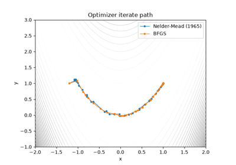
Nelder-Mead: minimizing without derivatives
1968 – Fiacco, McCormick, and Penalty/Barrier Methods#
Anthony Fiacco and Garth McCormick’s 1968 monograph Nonlinear Programming: Sequential Unconstrained Minimization Techniques unified an idea with older, scattered roots; Richard Courant had proposed a quadratic penalty as early as 1943. The idea is to replace a constrained problem with a sequence of unconstrained ones. Each adds a penalty term that grows as a constraint is violated, or a barrier term that blows up as the solution approaches the constraint boundary from inside. As the penalty weight increases toward infinity across the sequence, the unconstrained minimizers converge to the constrained optimum.
Implementation: mathematicskit.optimization.systems.constrained.PenaltyMethod
implements this sequential quadratic-penalty scheme, solving each
unconstrained subproblem with
BFGS.
References: A. V. Fiacco and G. P. McCormick, Nonlinear Programming: Sequential Unconstrained Minimization Techniques (New York: Wiley, 1968).
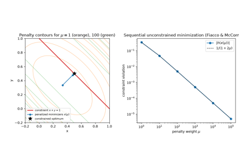
The quadratic penalty method: a sequence of unconstrained problems
1970 – BFGS and Quasi-Newton Methods#
Newton’s method for optimization converges quadratically near a minimum by using the exact Hessian to correct the steepest-descent direction, but computing and inverting the Hessian at every step is expensive. In 1970 Charles Broyden, Roger Fletcher, Donald Goldfarb, and David Shanno independently arrived at the same update formula. It builds an approximation to the inverse Hessian from successive gradient evaluations alone, giving superlinear convergence without ever forming a second derivative. More than five decades later it is still the default general-purpose optimizer in most numerical software.
Implementation: mathematicskit.optimization.systems.newton_quasi_newton.BFGS
wraps the "BFGS" method of scipy.optimize.minimize(), recording
the iterate path through its callback.
NewtonMethod
wraps the "Newton-CG" method for cases where an exact Hessian, or a
Hessian-vector product, is available.
References: C. G. Broyden, “The Convergence of a Class of Double-rank Minimization Algorithms,” Journal of the Institute of Mathematics and Its Applications 6(1) (1970), 76-90; R. Fletcher, “A New Approach to Variable Metric Algorithms,” The Computer Journal 13(3) (1970), 317-322; D. Goldfarb, “A Family of Variable-Metric Methods Derived by Variational Means,” Mathematics of Computation 24(109) (1970), 23-26; D. F. Shanno, “Conditioning of Quasi-Newton Methods for Function Minimization,” Mathematics of Computation 24(111) (1970), 647-656.
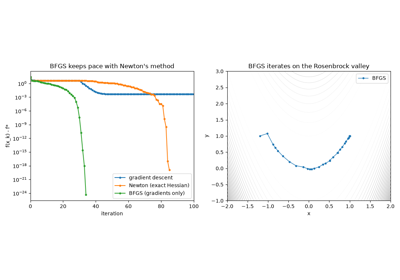
BFGS: Newton-like convergence without second derivatives
1983 – Nesterov’s Accelerated Gradient#
For convex functions with Lipschitz-continuous gradients, gradient descent reduces the error \(f(x_k) - f^*\) like \(O(1/k)\). Arkadi Nemirovski and David Yudin had shown that no method using only gradients can beat \(O(1/k^2)\) in general. Yurii Nesterov, then a graduate student in Moscow, found a method that achieves that bound. It takes each gradient step from an extrapolated point, carrying momentum from the previous step:
with \(f(x_k) - f^* \leq 2L\|x_0 - x^*\|^2/(k+1)^2\). The cost per step is the same as gradient descent. Accelerated methods, including FISTA for problems with non-smooth regularizers, became central to large-scale convex optimization and signal processing.
Implementation: mathematicskit.optimization.systems.momentum.NesterovAcceleratedGradient
implements this constant-step scheme with the iterate path recorded, for
direct comparison with
GradientDescent.
References: Y. E. Nesterov, “A Method of Solving a Convex Programming Problem with Convergence Rate \(O(1/k^2)\),” Soviet Mathematics Doklady 27(2) (1983), 372-376; A. Beck and M. Teboulle, “A Fast Iterative Shrinkage-Thresholding Algorithm for Linear Inverse Problems,” SIAM Journal on Imaging Sciences 2(1) (2009), 183-202.
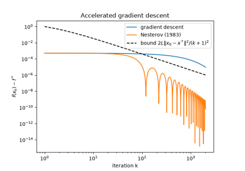
Nesterov acceleration: O(1/k^2) versus O(1/k)
2014 – Kingma, Ba, and Adam#
Training a neural network means minimizing a loss over millions of parameters from noisy mini-batch gradients whose scales can differ enormously between coordinates. Diederik Kingma and Jimmy Ba’s Adam (adaptive moment estimation) combines momentum with the per-coordinate scaling of John Duchi, Elad Hazan, and Yoram Singer’s AdaGrad (2011) and Geoffrey Hinton’s RMSProp. It keeps exponential moving averages of the gradient \(m_k\) and of its elementwise square \(v_k\), corrects both for their initialization at zero, and steps
Each coordinate therefore moves by roughly \(\alpha\) per step, whatever the scale of its gradient. Its robustness with little tuning made Adam the default optimizer of deep learning. Its convergence theory is subtle: Sashank Reddi, Satyen Kale, and Sanjiv Kumar (2018) showed that the original method can fail to converge on simple convex problems.
Implementation: mathematicskit.optimization.systems.momentum.Adam
implements the bias-corrected update of Kingma and Ba’s Algorithm 1.
References: D. P. Kingma and J. Ba, “Adam: A Method for Stochastic Optimization,” 3rd International Conference on Learning Representations (ICLR 2015), arXiv:1412.6980; J. Duchi, E. Hazan, and Y. Singer, “Adaptive Subgradient Methods for Online Learning and Stochastic Optimization,” Journal of Machine Learning Research 12 (2011), 2121-2159; S. J. Reddi, S. Kale, and S. Kumar, “On the Convergence of Adam and Beyond,” 6th International Conference on Learning Representations (ICLR 2018).